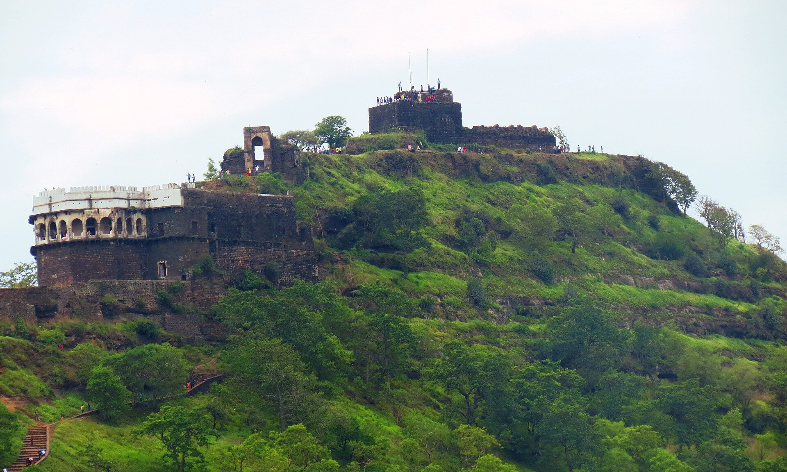
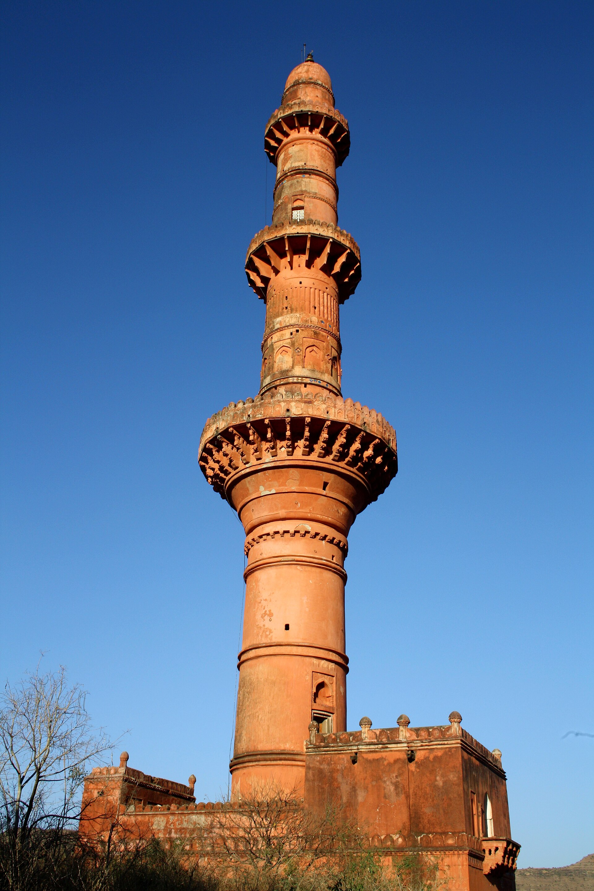
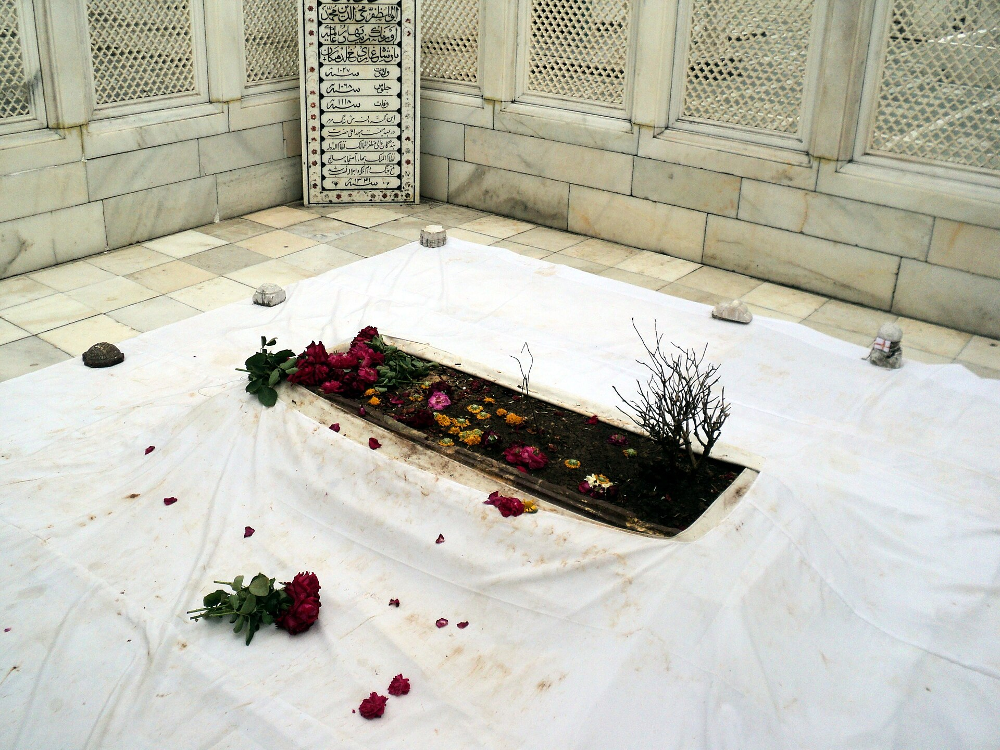
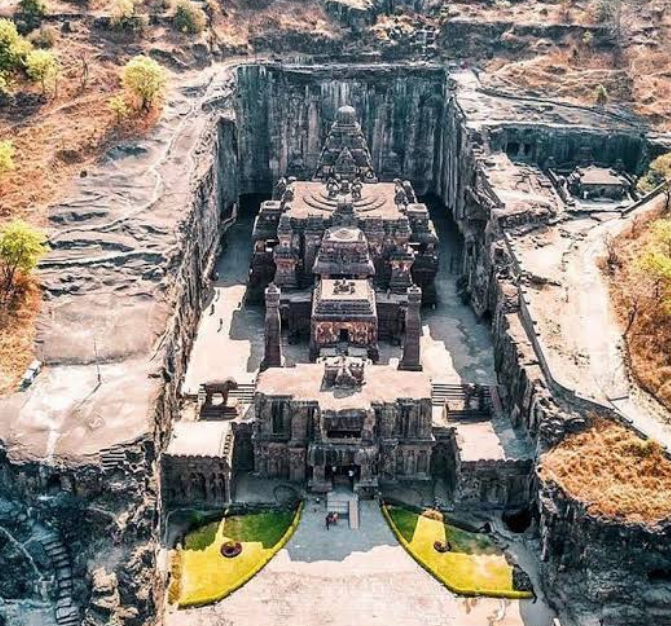
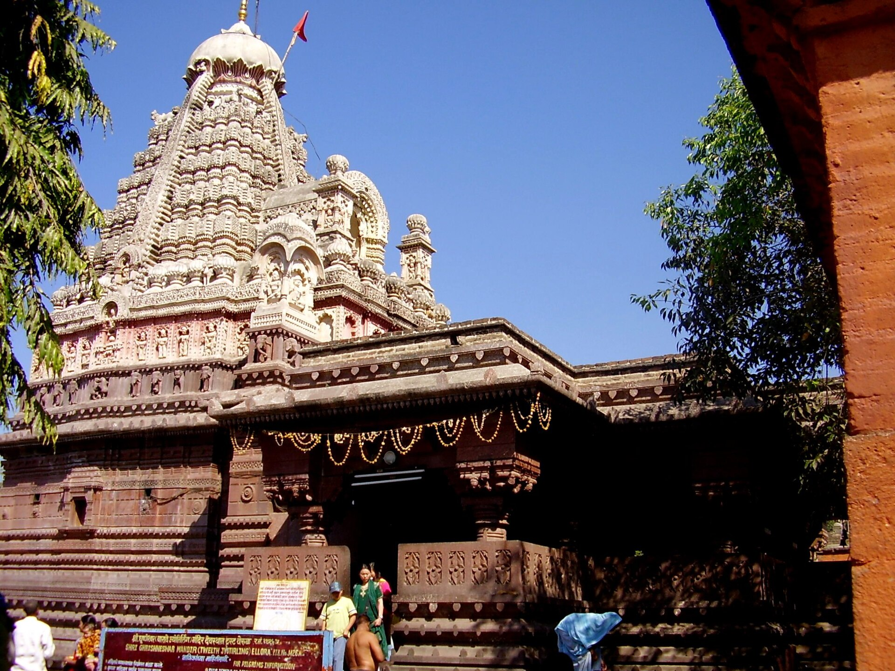
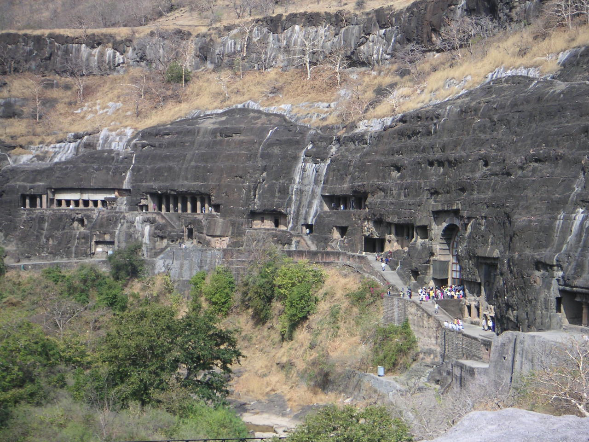
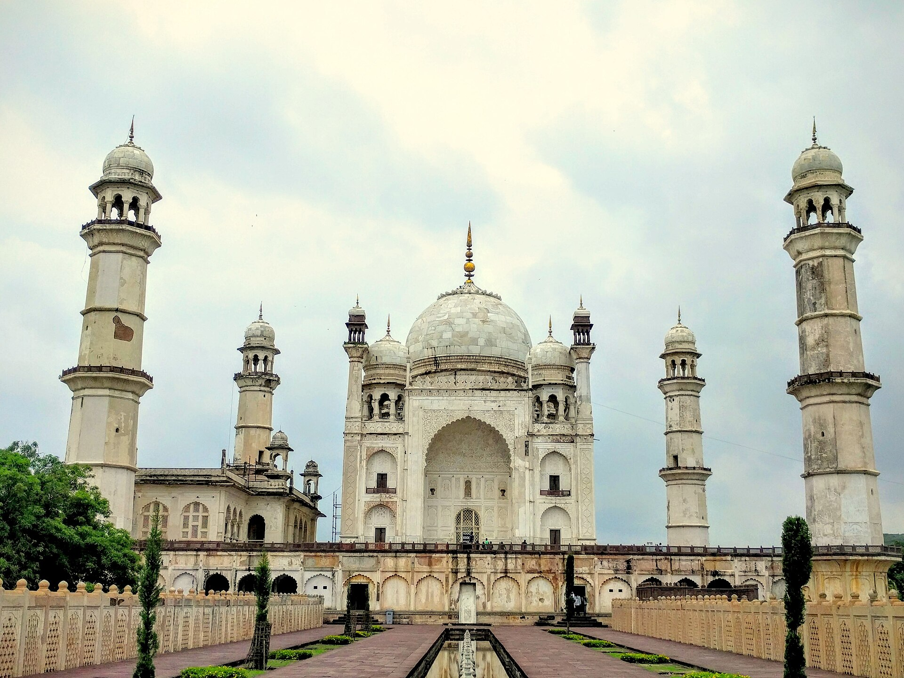
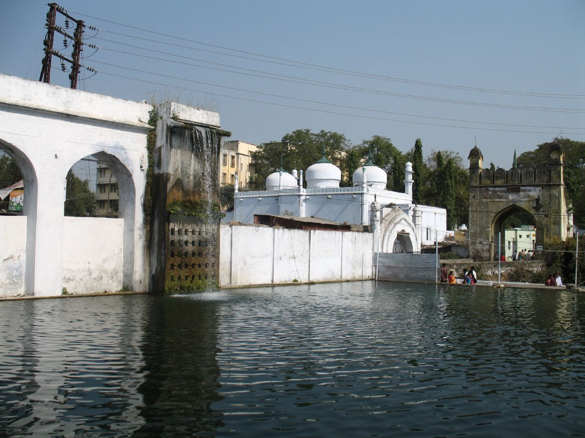

The citadel
c. 1187, Yadava
The Kalakot summit, reached only through the Andheri. The rock below it was cut away to leave fifty metres of sheer basalt — a wall that could not be scaled, mined or breached.
1 · Devagiri — the Hill of the Gods
Yadava capital c.1187 · raided 1296 · imperial capital 1327
Everything in this history begins on this rock. It was the richest city of the pre-Islamic Deccan, the prize that financed a coup in Delhi, the capital that a sultan tried to move a thousand kilometres to reach — and the barracks whose mutinous officers founded the Deccan's first independent Muslim kingdom. It changed hands at least eight times in five centuries and was never once carried by storm.
The Yadavas of Devagiri did not build their fortress so much as subtract it. They cut away the lower slopes of a conical basalt hill until roughly fifty metres of it stood sheer, unclimbable and unminable, and then hewed the moat out of the same living rock. Three concentric enclosures — Ambarkot outside, Mahakot in the middle, Kalakot the citadel — wrapped the approaches in bastions, false doors, spiked gates and crooked walls.
The famous defence is the Andheri, the dark passage: a rock-cut tunnel that is the only way to the summit, curving through blind turns and false branches in total darkness. Midway up the stair there is a grating in the roof. Above it the garrison kept a hearth. Heat and smoke could be funnelled down onto men climbing blind, and the tunnel could be shut like a valve.
Ibn Battuta, who saw the place in 1342, described the citadel as reachable only by a leather ladder that was drawn up at nightfall.
Every guidebook says the rock-cut moat was stocked with crocodiles. Every careful source says it in the passive voice — 'crocodiles were said to have been kept' — which is a historian's way of declining to vouch for something.
Treat it as lore. The moat, the scarp, the brazier grating and the blind tunnel are all documented and all still there; the fortress did not need reptiles to be terrifying.
Ala-ud-din Khalji, governor of Kara, left on 26 February 1296 with about eight thousand horse, put out that he was marching on Chanderi, crossed the Vindhyas — which no northern army had done — and appeared before a city whose army was away. Raja Ramachandra bought him off. Ferishta's schedule of the indemnity runs to 600 mann of gold, 1,000 of silver, 7 of pearls, 2 of precious stones and 4,000 pieces of silk, plus the revenues of a province.
The detail Gribble savours is the one about the granary: during the second siege the defenders discovered that what they had stored as grain was salt.
The treasure never reached Delhi. Ala-ud-din carried it to Kara, spent it on soldiers, then invited his uncle and father-in-law Sultan Jalal-ud-din to come and congratulate him. The old man came unarmed in a small boat, was embraced on the riverbank, and was beheaded there. Barani records that portions of the Devagiri hoard were still in the Delhi treasury two reigns later.
Muhammad bin Tughluq's decision was not the madness the chroniclers made of it. Delhi lay exposed to Mongol raids and hundreds of miles from the empire's richest provinces; Devagiri lay near the centre of his dominions on the most defensible rock in India. He renamed it Daulatabad — the abode of fortune — and ordered the capital moved.
He also built for it: a broad road with shade trees planted on both sides and halting stations set at intervals along the whole 1,100 km. It was not enough. Barani, who loathed him, wrote that the order fell on the entire population and that not a dog or cat was left in Delhi. Ibn Battuta was told of a blind man dragged the whole way, of whom only a leg arrived, and of a cripple flung there by catapult. The poet Isami — who wrote for the Bahmanis, the state the migration eventually produced — recorded that his own grandfather was dragged from the city by royal servants and died on the road at Tilpat.
By 1335 the project was finished. Revolt in Ma'bar and Bengal, plague in the army, a token copper currency that private households simply forged, and a doubled land tax falling in a famine year had exhausted the state. The sultan let those who wished return to a wrecked Delhi, and many died going back.
But the migration did not reverse. Scholars, soldiers, Sufis, masons, poets and administrators stayed in the south. That residue is the raw material of everything after: the Bahmani sultanate, the five kingdoms that succeeded it, the Chishti shrines of Khuldabad, and the language — Dakhni — that grew out of Delhi speech meeting Marathi, Kannada and Telugu.
Barani wrote after the sultan's death, for his successor, and hated him; Ibn Battuta arrived seven years later and reports much of the horror at second hand; Isami had a personal grief and a rival patron. All three are witnesses and all three are interested parties.
Against the emptied-city picture: Sanskrit inscriptions of 1327–28 attest to a functioning, prosperous Delhi at exactly the moment it was supposedly deserted. The order most likely targeted the court and its dependants — nobles, ulema, officials, craftsmen — that is, the political class, which is also why the political consequences were so vast.
No source of any date gives a death toll for either march. Any number you see quoted has been invented somewhere along the way.
| 1296 | Alauddin Khalji — surprise, a salt granary, negotiated tribute |
| 1308 | Malik Kafur — overwhelming force, submission |
| 1317 | Mubarak Shah — reoccupied, renamed Qutbabad |
| 1327 | Muhammad bin Tughluq — peaceful transfer; made capital |
| 1347 | The Centurions — internal mutiny |
| 1499 | Ahmadnagar — the garrison handed over the keys |
| 1633 | The Mughals — two mines, a breached bastion… and the keys |
| 1760 | The Marathas — capture; later held by the Nizams |
The amiran-i sadah — the 'Centurions', commanders of a hundred horse — were the nobility Delhi had deported here and then abandoned. When Muhammad bin Tughluq ordered them north under escort and his governor of Malwa executed some eighty of them at Dhar, the rest rose, plundered the treasury and elected their own sultan.
They first raised the Afghan officer Ismail Mukh. He proved unequal to the fighting and did something almost unheard of in this history: he abdicated voluntarily, in favour of the abler man. On 3 August 1347 Zafar Khan was enthroned as Ala-ud-din Bahman Shah, and the capital went to Gulbarga.
Eleven years earlier, in the vacuum the same collapse had opened south of the Tungabhadra, two brothers had founded Vijayanagara. The two great powers of the next two centuries were born of one imperial failure, and spent those centuries fighting each other.
Local tradition runs a secret passage from the fort to Ellora, thirty kilometres away, and populates the Andheri with ghosts and djinn.
The passage is unsupported. The ghosts need no explanation beyond the tunnel itself, which is genuinely pitch dark, genuinely full of bats, and was designed by people who wanted you to lose your nerve in it.
“Deogiri was exceedingly rich in gold and silver, jewels and pearls, and other valuables. The people of that country had never heard of the Mussulmans; no Mussulman king or prince had penetrated so far.”Zia-ud-din Barani, quoted in Gribble, Vol. I
Almost everything here lies on one north-west axis out of Aurangabad: the fort at 16 km, Khuldabad at 24, Ellora at 30. Ajanta is the outlier, a hundred kilometres north.

c. 1187, Yadava
The Kalakot summit, reached only through the Andheri. The rock below it was cut away to leave fifty metres of sheer basalt — a wall that could not be scaled, mined or breached.
Yadava, rock-cut
The dark passage: one curving tunnel of blind turns and false branches, with an iron grating overhead where the garrison lit its fire. The only route to the top.

1445 (disputed)
A victory tower of 63 m and four storeys, holding 24 chambers, with a small mosque at its foot faced in Persian blue tile. Built to celebrate a Bahmani victory over Vijayanagara — and, recent scholarship notes, built by a slave.
prison under the Mughals
Abul Hasan Tana Shah, last sultan of Golconda, held out for eight months in 1687 and then spent twelve years here. He died in this building in 1699.
1318 · temple since 1948
A Khalji mosque standing on 106 pillars plainly taken from a Jain temple. In 1948 it was converted into the Bharat Mata temple — a contested site with two complete histories inside one building.

khanqah from c. 1327
The Chishti saint Burhanuddin Gharib came south with the 1327 migration and founded the Deccan's first Sufi institution here. Aurangzeb chose to be buried in its precinct.

6th–10th c.
Thirty-four caves, Buddhist, Hindu and Jain side by side. The Kailasa temple was cut downward out of one hillside, removing an estimated 200,000 tonnes of rock to leave a free-standing building behind.

16th c. rebuild
The smallest and the last of the twelve Jyotirlingas, beside Ellora; rebuilt by Maloji Bhosale and given its present form by Ahilyabai Holkar.

2nd c. BCE – 6th c. CE
Thirty caves in a horseshoe gorge, holding the largest surviving body of early Indian painting — abandoned, forgotten and swallowed by jungle until a British hunting party stumbled on them in 1819.

1668–69
The 'Taj of the Deccan', raised by Prince Azam Shah for his mother Dilras Banu Begum and designed by Ata-ullah, son of the Taj Mahal's architect — at a fraction of the budget, and it shows.

c. 1695
A water mill driven by a siphoned underground channel from the hills, built beside the dargah of Baba Shah Musafir — the same hydraulic thinking as Malik Ambar's aqueduct, put to work grinding grain for pilgrims.